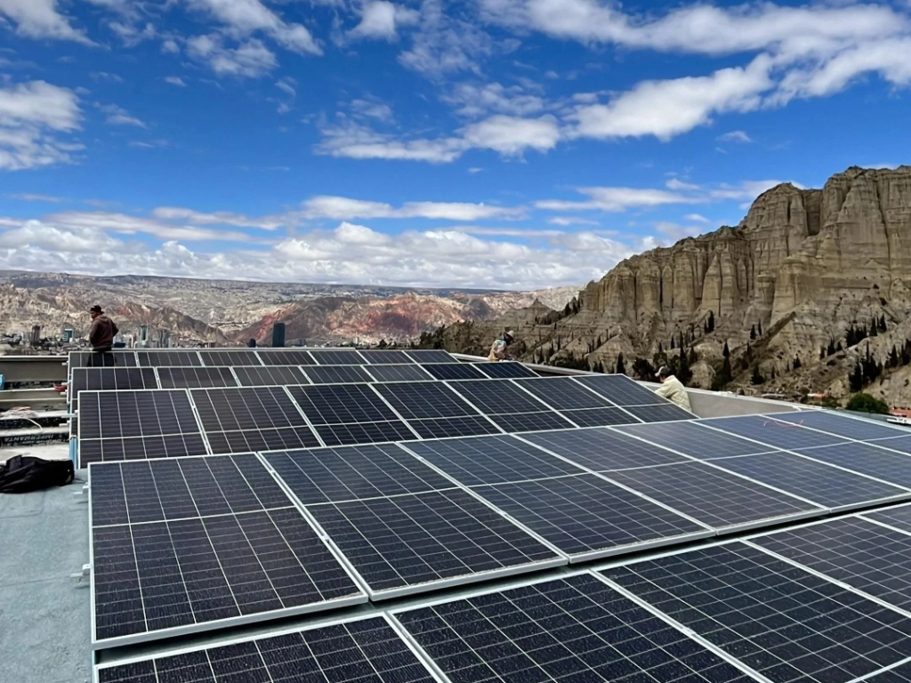

Gestión inteligente de baterías solares con Aprendizaje por Refuerzo
Pregunta de Investigación
«¿Puede un agente de RL gestionar la batería de una microrred rural en La Paz cubriendo más demanda crítica que las reglas fijas, sin aumentar el desgaste de la batería?»
Evaluación empírica sobre 10 años de datos horarios de radiación y temperatura (NASA POWER, 2015–2024) en el altiplano andino (~3,600 msnm), comparando el agente RL contra tres baselines heurísticos y el oráculo teórico de programación dinámica con información perfecta.

Instalación solar fotovoltaica en La Paz
Generación solar en altura con alta irradiación y relieve característico del valle paceño.
🗺️ Mapa de Radiación Solar del Departamento de La Paz
Atlas solar departamental continuo (Altiplano, Valles, Yungas y Norte Amazónico). Malla de calor continua interpolada con escala meteorológica profesional (W/m²) sobre mapa base blanco libre sin API keys.
Atmósfera andina diáfana de alta transparencia con mínima dispersión por aerosoles.
El departamento exhibe un fuerte contraste: el Altiplano y Cordillera registran picos extremos (>1,000 W/m²) por la delgadez atmosférica, mientras que los Yungas sufren atenuación por condensación orográfica de nubes amazónicas.
☀️ Datos Climáticos de La Paz (NASA POWER)
Serie histórica de 10 años (2015–2024, 87,672 horas consecutivas) de irradiación global horizontal (GHI) y temperatura a 2 m (T2M) para el Altiplano boliviano (-16.50°S, -68.15°W, ~3,600 msnm, huso UTC-4).
Mapa de Calor: GHI Media (W/m²)
Hora local × MesDistribución horaria media mensual. Se aprecia el intenso recurso solar diurno (hasta >850 W/m²) típico de la radiación directa en altura andina, con reducciones por nubosidad convectiva en época de lluvias (Dic–Mar).
Irradiación Diaria y Temperatura
Media mensual + Banda P10–P90Irradiación diaria media (kWh/m²/día) con dispersión interanual (P10–P90) y temperatura media ambiente mensual (°C).
ℹ️ Nota sobre datos y demanda simulada:
Los datos meteorológicos corresponden a NASA POWER (v2.0, ERA5 reanálisis). La demanda eléctrica se simula para una vivienda/centro rural estándar en La Paz con dos categorías diferenciadas: cargas críticas (~1.6 kWh/día: refrigeración básica continua, iluminación esencial y comunicaciones con picos matutinos 06–08 h y nocturnos 18–22 h) y cargas no críticas (~1.8 kWh/día: bombeo de agua, talleres y electrodomésticos concentrados de 09–17 h y 18–21 h), con factor de fin de semana (+15%) y ruido estocástico log-normal (~10%), generada una sola vez con semilla fija (42).